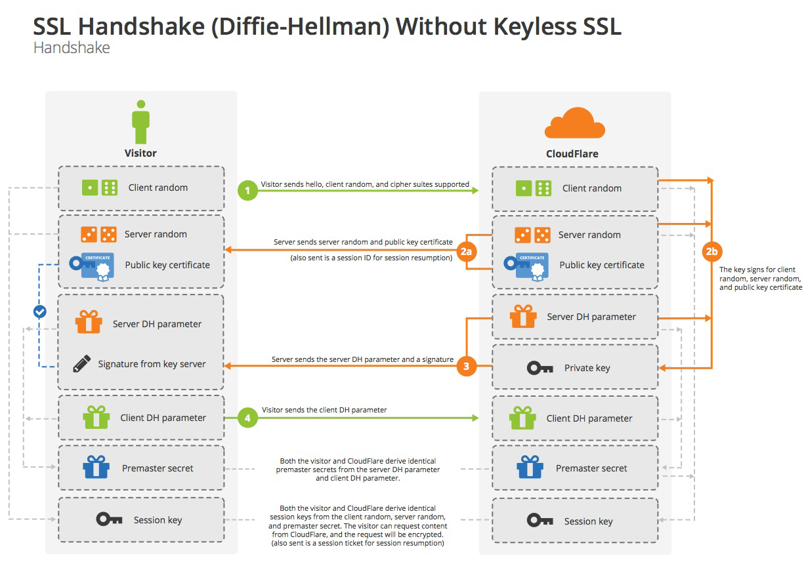

What’s TLS/SSL
SSL(Secure Sockets Layer) 安全套接层，是一种安全协议，经历了 SSL 1.0、2.0、3.0 版本后发展成了标准安全协议 - TLS(Transport Layer Security) 传输层安全性协议。
SSL/TLS的目的：
（1） 所有信息都是加密传播，第三方无法窃听。
（2） 具有校验机制，一旦被篡改，通信双方会立刻发现。
（3） 配备身份证书，防止身份被冒充
SSL协议的握手过程
DH算法的握手过程
上面使用RSA算法的握手阶段都不加密，都是明文的。整个通话的安全，只取决于Premaster secret能不能被破解。理论上，只要服务器的公钥足够长（比如2048位），Premaster secret可以保证不被破解。
为了保证安全性，可使用DH（Diffie Hellman）算法作为握手阶段的算法，此时Premaster secret不需要传递，双方只需要交换各自参数就可以算出这个随机数。

Keyless
以RSA算法的握手过程为例，可知
- session key的生成共需要三个随机数。
- public key和private key只用于加密和解密session key，无其他作用。
- public key放在服务器的数字证书中。
包括握手阶段和之后的对话过程，服务器的public key和private key只用到一次。这就是CloudFlare能够提供Keyless服务的根本原因。
当用户想要使用外部CDN，加快自己网站的访问速度，但是出于安全考虑，不能把私钥交给CDN服务商,这时可以把私钥留在自己服务器，只用来解密对话密钥，其他步骤都让CDN服务商去完成。

DH算法的握手过程同理。
性能优化
由于Cloud Flare分布广泛，SSL connection的主要时间开销变成了Cloud Flare与Key Server之间一趟来回的时间开销（原先是visitor与Key Server间两趟来回），大大提升了效率。
Session的恢复
with Session ID
session ID: 每一次对话都有session ID。如果对话中断，重连时只要客户端给出Session ID，且服务器有这个ID的记录，双方就可以重新使用已有的Session key。
缺点：服务器保留Session ID占用空间大，服务器集群内部存在Session ID共享问题。

with Session ticket
session ticket: 服务器能解密session ticket，解密后服务器可获得本次对话的主要信息，比如对话密钥和加密方法，此时服务器就不必重新生成对话密钥了。